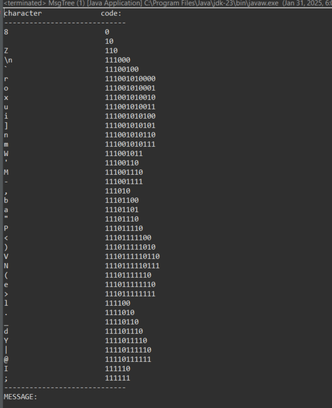
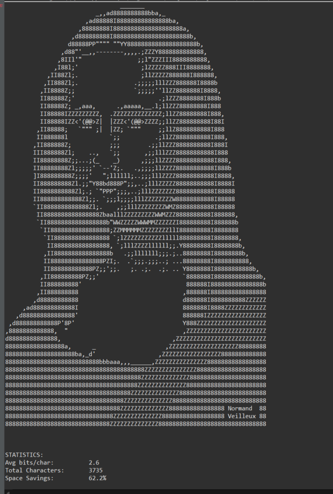

Projects
Archived Message Reconstruction
This project is an implementation of a binary-tree-based algorithm for reconstructing archived messages. Given a compressed message file ending in .arch, the program decodes and prints the original message to the console. The encoding scheme is provided as a pre-order traversal representation of a binary tree, where leaf nodes contain characters and internal nodes are empty.
 Web Portfolio
The first project is related to develop a single Web page using only two technologies: HTML and CSS. The project consists in creating a single web page with a menu at the top know as Navigation Bar. We have to include text describing ourself and text describing the project. Additionally, we need to include two images: one image is of ourself and second image is anything related to the project itself.